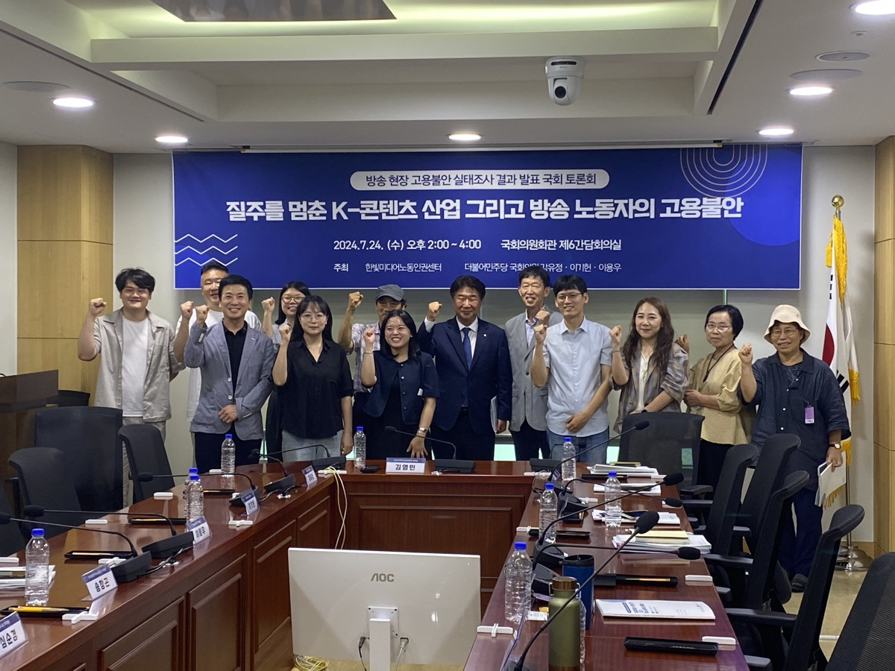
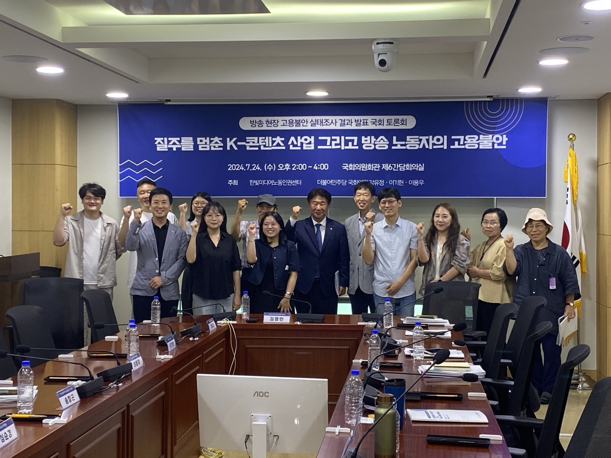
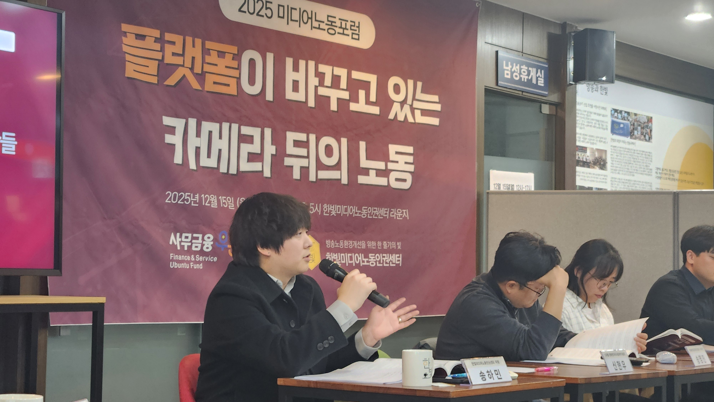
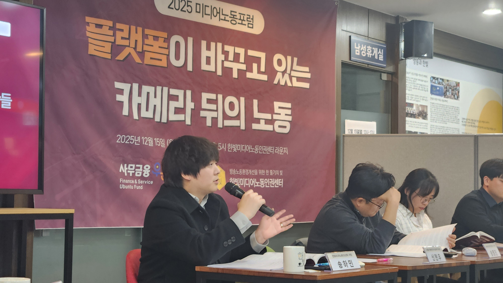

사람들은 매일 콘텐츠를 소비합니다. 1시간, 10분, 60초. 손끝으로 무심히 넘기는 콘텐츠를 만들기 위해서는 수많은 사람들의 노동을 필요로 합니다. 그러나 콘텐츠를 만드는
사람들의 목소리는 전해질 수 없어서 우리는 그들의 존재를 알아차리기 어렵습니다.
방송미디어 비정규직 노동자들은 목소리를 낼 수 없는 구조 속에 있습니다. 업계의 높은 경쟁 강도로 인한 장시간 노동, 비용절감 등을 목적으로 한 무늬만 프리랜서 계약, 고용
불안 등. 방송미디어산업의 고질적 문제는 일하는 사람들을 끊임없이 불안과 경쟁에 내몹니다.
이런 열악한 노동 현실은 K-컬처와 한류 열풍의 위세에 가려집니다. 문화강국을 실현하겠다는 대통령의 말은 노동존중 실현이라는 말과 접점을 이루지 못하고
있습니다.
한빛센터는 음소거 된 방송미디어 노동자들의 목소리를 여러분들에게 들려드리고자 합니다. 우리가 매일 보는 콘텐츠 속에 이뤄지는 수많은 노동에도 온전히 일하는 사람으로서의
권리가 보호받는 세상을 위해 관심을 부탁드리겠습니다.
그동안 한빛센터가
방송미디어 노동자들을 인터뷰하면서
듣고 정리한 내용을
여러분들께 들려드립니다
숫자로 보는
방송미디어노동자들의
현실
우리가 외면하고 있는 오늘의 기록입니다.
정신건강 문제 경험률
평균 월 소득
현장의 목소리
한빛센터는
그동안 이런 사람들을 만났습니다.
2023~2024 한빛센터가 간다
방송미디어 현장을 직접 찾아가 노동자들의 목소리를 담았습니다. 드라마, 예능, 시사 등 다양한 제작 현장에서 일하는 스태프들의 생생한 이야기를 기록했습니다.
2024 예능작가 실태조사
예능 프로그램의 핵심 인력인 작가들의 근무 환경과 처우를 조사했습니다. 임금 체불, 장시간 노동, 불안정한 고용 형태 등 구조적 문제점을 밝혀냈습니다.
2024 고용불안 실태조사
프리랜서와 계약직으로 일하는 방송 종사자들의 고용 불안정 실태를 심층 분석했습니다. 연간 평균 4개월 이상의 실업 상태를 경험하는 현실을 드러냈습니다.
2024 유튜브 영상 편집자 심층인터뷰
새로운 미디어 환경에서 일하는 유튜브 영상 편집자들을 만났습니다. 24시간 대기, 낮은 단가, 불명확한 계약 관계 등 플랫폼 노동의 그림자를 조명했습니다.
2025 유튜브 크리에이터 면접조사
1인 미디어 시대의 크리에이터들이 겪는 수익 불안정과 번아웃 문제를 다뤘습니다. 월 평균 143만원의 소득과 끊임없는 콘텐츠 압박의 현실을 기록했습니다.
엔터테인먼트 종사자 면접조사
K-POP과 한류의 이면에서 일하는 엔터테인먼트 종사자들의 이야기입니다. 매니저, 스타일리스트, 안무가 등 보이지 않는 곳에서 일하는 이들의 노동 현실을 담았습니다.
 

 


하루에 20시간 넘는 노동을 부과하고
2~3시간 재운 뒤 다시 현장으로 노동자를 불러내고
우리가 원하는 결과물을 만들기 위해
이미 지쳐있는 노동자들을 독촉하고 등떠밀고
제가 가장 경멸했던 삶이기에 더 이어가긴 어려웠어요.
- 고 이한빛 PD 유서 중 -
"카메라 뒤에 사람이 있다."
한빛미디어노동인권센터는
방송업계의 문제를 지적하며 세상을 떠난 고 이한빛 PD의 유지를 이어,
방송노동환경 개선을 위해 만들어진 공익법인입니다.
한빛센터는 2018년부터
미디어신문고를 운영하면서
방송미디어 제작 현장의 노동권 침해에 대응하고 있습니다.
기초적인 노동상담부터 유관 기관과 연계한 지원,
제작사 및 방송사에 대한 시정 요구 등의 활동을 하고 있습니다.


방송미디어산업의 화려함이 더해갈수록,
그 뒤에 놓인 그림자도 깊어집니다.
카메라 뒤의 보이지 않는 노동도
온전히 권리를 보호받을 수 있도록
많은 관심과 응원을 부탁드립니다.